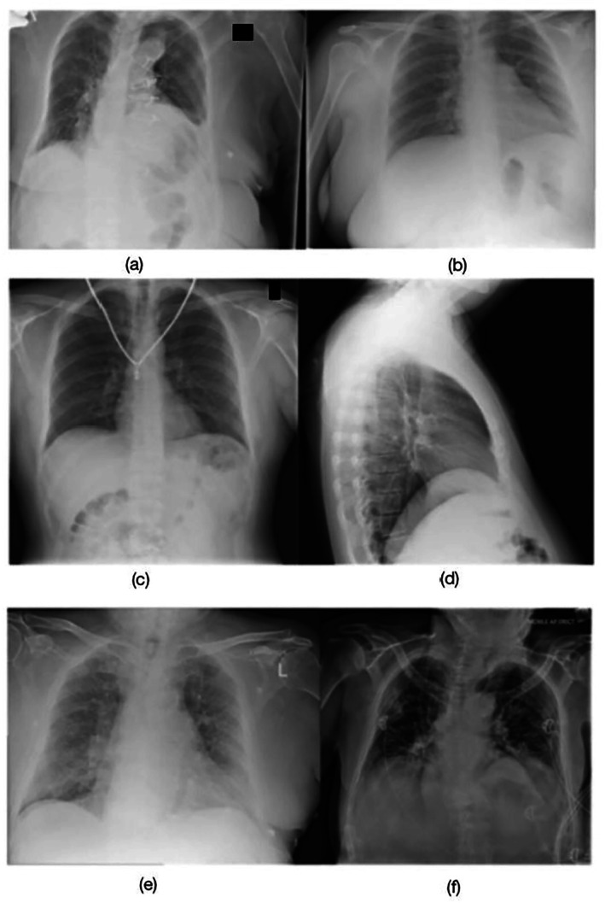
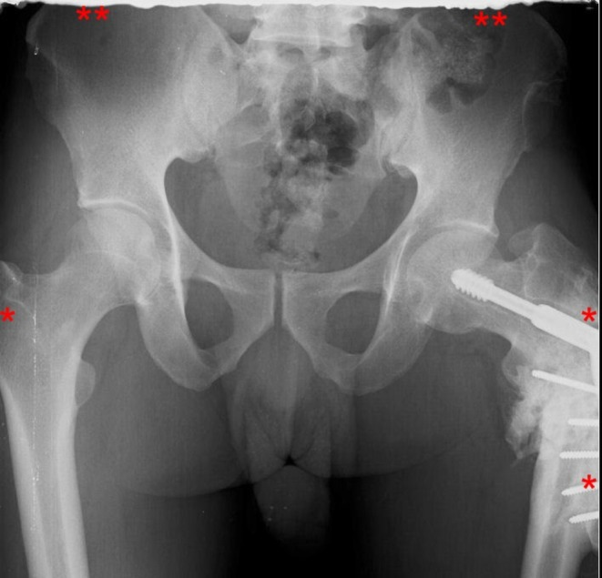
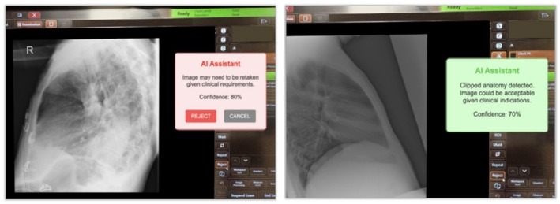

9424 — Chụp lại trong X-quang trẻ: mỗi lần lặp gấp đôi liều, ngưỡng nào là "bình thường" và cách giảm / Repeat and reject analysis in paediatric radiography
Tags: protocol:chup-lai protocol:reject-analysis protocol:DRL protocol:LRRL protocol:X-quang-tre protocol:co-dinh-tre protocol:AEC vung:toan-than score:reject-rate incidentaloma:khong
Mức chắc chắn (certainty): tổng hợp y văn (literature synthesis) — ghép báo cáo AAPM TG-305 (J Appl Clin Med Phys 2023, PMC10161059, CC BY 4.0), phân tích 2.031.713 ảnh / 172.495 ảnh bị từ chối tại 44 hệ thống, 11 bệnh viện (J Med Radiat Sci 2024, PMC11569408, CC BY-NC-ND 4.0), nghiên cứu 107.277 phim DR + 20.659 CT (PMC10742225, CC BY 4.0), audit 47.300 phim có tách nhóm trẻ (PMC12302114, CC BY 3.0), 5.889 phim CR (PMC12950496, CC BY 4.0) và 10.000 phim ngực dạy AI (PMC12950515, CC BY 4.0). Nhóm không có bệnh nhân của mình.
Câu chốt: một lần chụp lại không phải "chụp thêm cho chắc" — nó là một suất liều thứ hai lên đúng vùng cơ thể đó, và ở trẻ mô đang phân chia + tuổi thọ còn dài nên cùng một mSv có nguy cơ trọn đời cao hơn. Vì vậy đơn vị đo chất lượng không phải "ảnh đẹp" mà là tỉ lệ chụp lại (reject/repeat rate) đo được, có ngưỡng tham chiếu tại chỗ (local reject reference level), và chỉ chụp lại khi ảnh không trả lời được câu hỏi lâm sàng — không phải khi ảnh chưa đẹp.
1. Tổng quan – vì sao "chụp lại" là biến số liều quan trọng nhất còn lại
1.1 Định nghĩa tách rời: reject ≠ repeat
- Ảnh bị từ chối (reject): ảnh không được gửi cho bác sĩ đọc, dù đã phát tia → liều đã tiêu, không có giá trị chẩn đoán. Đây là định nghĩa của AAPM TG-305 (PMC10161059).
- Ảnh chụp lại (repeat): ảnh được chụp thêm cho cùng một phim/chuỗi, vượt số ảnh dự kiến; ảnh cũ vẫn vào PACS và vẫn được đọc. Repeat có thể hợp lý (bệnh nhân lớn hơn detector, cần 2 phim để đủ phổi) hoặc do lỗi kỹ thuật.
- Hệ quả đo lường: một khoa chỉ báo "reject 5%" có thể vẫn chụp lại 15% nếu ảnh lỗi vẫn được gửi đi đọc. Phải ghi cả hai, và ghi lý do — đây là điểm AAPM TG-305 nhấn mạnh.
1.2 Vật lý: mỗi lần lặp là +100% liều của phim đó
- Liều một phim tỉ lệ với mAs (và kVp theo hàm mũ): D ∝ mAs × kVpⁿ. Chụp lại cùng phim, cùng thông số → D_tổng = 2 × D_phim; chụp lại 3 lần → 3 ×.
- AEC (automatic exposure control) không bảo vệ khỏi chụp lại: AEC chỉ điều chỉnh một lần phát tia; nếu ảnh hỏng vì tư thế, cắt cụt giải phẫu, cử động, lần chụp lại vẫn phát tia đủ liều như lần đầu.
- Liều hiệu dụng của phần bị từ chối không biến mất: trong nghiên cứu 107.277 phim DR, 8.904 ảnh bị từ chối mang 377,3 mSv liều hiệu dụng cộng dồn — trung bình ≈ 0,042 mSv cho mỗi ảnh bị từ chối (PMC10742225). Đây là con số dùng để quy đổi tỉ lệ % ra mSv khi báo cáo.
- Ảnh "gần đúng" vẫn có thể dùng: 93,1% phim ngực bị từ chối và 77,9% phim cơ xương bị từ chối vẫn đủ thông tin chẩn đoán (Rosenkrantz, dẫn trong PMC10161059) — nghĩa là phần lớn liều "thừa" đến từ tiêu chuẩn từ chối quá chặt, không từ máy.
1.3 Vì sao trẻ là nhóm riêng
- Mô trẻ nhạy cảm hơn: nhiều tế bào đang phân chia, tuổi thọ còn dài để biểu hiện tổn thương muộn → cùng một liều, nguy cơ trọn đời cao hơn người lớn. Vì vậy các hội đặt ngưỡng chặt hơn cho khoa nhi.
- Hợp tác kém, kích thước nhỏ: trẻ không nín thở được, dễ cử động, không hiểu lệnh; detector/trường chiếu lớn hơn cơ thể → dễ cắt cụt giải phẫu hoặc lệch trung tâm.
- Số liệu thực địa cho thấy trẻ bị từ chối nhiều hơn: trong audit 47.300 phim, trẻ chiếm 18,1% khối lượng nhưng 30,5% tổng số ảnh bị từ chối → suy ra ≈ 18,6% phim trẻ bị từ chối so với ≈ 9,3% ở người lớn (PMC12302114). Đây là tính lại từ số công bố, không phải tỉ lệ chuẩn quốc tế.
- Nguyên nhân ở trẻ nghiêng về tư thế/cử động, không phải "kỹ thuật phát tia": trong audit trên, dị vật/artifact 26,2%, cử động 18,8%, tư thế 14%, cắt cụt/collimation 11,7% (PMC12302114). Ở nghiên cứu 44 hệ thống người lớn, tư thế chiếm 76% và cử động 7,5% (PMC11569408).
1.4 Ngưỡng định lượng nằm lòng
| Đại lượng | Số liệu | Nguồn |
|---|---|---|
| Mục tiêu chung (AAPM TG-151) | 8%; 5% là ngưỡng dưới, 10% là ngưỡng trên cần điều tra | PMC10161059 |
| Mục tiêu khoa nhi (AAPM TG-151) | 5%; 7% là ngưỡng trên cần điều tra | PMC10161059 |
| Khoảng tỉ lệ đã công bố (DR) | 1,2–17%; phim–màn hình cũ ~11%; DR 11–13% ở nhiều cơ sở | PMC11569408, PMC10161059 |
| Trung vị đa trung tâm | 9,1% (2.031.713 ảnh); LRRL = 10,6% (bách phân vị 75) | PMC11569408 |
| Tỉ lệ DR / CT | 8,3% / 2,5%; liều hiệu dụng cộng dồn 377,3 / 1.267,4 mSv | PMC10742225 |
| Tỉ lệ CR tại khoa X-quang | 16,5% (974/5.889); sọ/xoang 34,9%, khung chậu 29,9%, bụng 26,9% | PMC12950496 |
| Nguyên nhân hàng đầu | Tư thế 61–76%; cắt cụt giải phẫu 21–40,5%; cử động 2,9–18,8% | PMC11569408, PMC10742225, PMC12950496 |
| Vùng bị từ chối nhiều nhất | Đầu gối 18,1%, khung chậu 17,2% (tương đối); ngực 2,1% (tuyệt đối) | PMC11569408 |
| Ảnh từ chối nhưng vẫn đủ chẩn đoán | 93,1% phim ngực; 77,9% phim cơ xương | PMC10161059 |
| AI phân loại ảnh dưới chuẩn | DenseNet121 AUROC 0,97; YOLOv8 0,95 (10.000 phim ngực, có ca nhi) | PMC12950515 |
Đừng so sánh sai: "9,1%" của PMC11569408 là trung vị người lớn, hệ thống cố định; "16,5%" của PMC12950496 là CR ở nước thu nhập trung bình; "18,6%" ở trẻ là số suy ra từ một audit. Mỗi con số chỉ dùng để so với chính khoa mình theo cùng định nghĩa.
2. Mẫu hình nguyên nhân + cách định vị (Gamut)
- Nhóm 1 — tư thế/định vị (positioning): xoay bệnh nhân, lệch trung tâm, không thẳng trục, tay che phổi, vai che đỉnh phổi. Đây là nguyên nhân số 1 ở mọi loại khoa (61–76%).
- Nhóm 2 — cử động (motion): nhòe do thở, khóc, co giật, run; trẻ < 3 tuổi và trẻ đau/sợ là nhóm cao nhất. Trên ảnh: bờ xương mờ đôi, mạch máu nhòe, không cắt cụt nhưng không đọc được chi tiết.
- Nhóm 3 — cắt cụt giải phẫu / collimation: mất đỉnh phổi, mất mỏm cùng vai, mất mấu chuyển lớn, mất 1/3 trên xương đùi. Phân biệt với che chắn chì (bài 9422) cũng có thể che mất giải phẫu.
- Nhóm 4 — artifact: quần áo, khuy, dây chuyền, khóa kéo, băng dính, điện cực, vật kim loại trong túi; artifact bóng ma của tấm CR (ghosting do xóa tấm chưa hết); lưới (grid) sai hướng; dấu tay.
- Nhóm 5 — phơi sáng (exposure): thiếu sáng (nhiễu, mất chi tiết sau) hoặc quá sáng (bão hòa); lưu ý ảnh thiếu sáng nhưng đủ giải phẫu có thể chấp nhận (xem mục 5).
- Nhóm 6 — thiết bị/hệ thống: lỗi detector, lỗi PACS, mất ảnh, sai nhãn (labeling), sai bên (R/L). Nhóm này không phải lỗi kỹ thuật viên nhưng vẫn tính vào tỉ lệ từ chối.
- Nhóm 7 — yêu cầu lâm sàng: bác sĩ yêu cầu thêm phim (thêm bình diện, thêm vùng) — không phải reject, phải tách khỏi báo cáo chất lượng.
Mnemonic "POSITION" khi soi một ảnh bị từ chối: Positioning, Orientation/marker, Shielding/collimation, Inspiration/motion, Technique/exposure, Identification, Overlap, Need (câu hỏi lâm sàng có trả lời được không).
3. Bảng so sánh phân biệt (ma trận đối chiếu)
| Nguyên nhân (entity) | Hình ảnh điển hình | Chốt vào (rule-in) | Chốt loại (rule-out) | Gợi ý xác nhận |
|---|---|---|---|---|
| Xoay / lệch tư thế | Xương ức lệch khỏi đường giữa; đầu trong xương đòn không đối xứng; bờ sườn chồng | Đối xứng hai bên sai + trục xương chuẩn lệch | Đối xứng tốt, chỉ thiếu sáng → không phải lỗi tư thế | Đo khoảng cách đầu xương đòn–gai sau; so 2 bên |
| Cử động | Bờ xương mờ đôi, mạch máu nhòe, nhiễu dạng vệt; giải phẫu vẫn đủ | Nhòe lặp lại ở ≥ 2 cấu trúc + không cắt cụt | Nhòe một vùng do vật lạ di động → artifact | Hỏi động tác; chụp lại ngắn thời gian phát tia hơn |
| Cắt cụt giải phẫu | Mất đỉnh phổi / mỏm cùng vai / mấu chuyển / 1/3 trên xương đùi; bờ ảnh cắt vào xương | Mất mốc giải phẫu bắt buộc của phim | Đủ mốc, chỉ bờ mềm mô bị cắt → có thể chấp nhận | Đối chiếu danh mục mốc giải phẫu của phim |
| Artifact quần áo/trang sức | Đường cản quang hình khuy, dây, khóa; bóng lạ ngoài cơ thể | Vật lạ ngoài cơ thể + không trùng giải phẫu | Tổn thương trong xương trùng vị trí → không phải artifact | Hỏi/tháo vật; chụp lại sau khi tháo |
| Ghosting tấm CR | Dải/vệt chéo mờ trên vùng phổi, không theo giải phẫu | Vệt thẳng, lặp lại giữa các phim cùng tấm | Đường mờ theo khe/đường giải phẫu → bệnh lý | Kiểm tra lịch xóa tấm, chạy QC |
| Thiếu sáng | Nhiễu hạt, mất chi tiết sau, không bão hòa | Giải phẫu đủ + chi tiết cần thiết còn đọc được → chấp nhận | Mất chi tiết sau tim/phổi → phải chụp lại | So với mức nhiễu chấp nhận của khoa |
| Sai nhãn / sai bên | Marker R/L sai, tên/ngày sai, hai bệnh nhân lẫn | Sai định danh hoặc sai bên | Marker đúng, chỉ mờ → không phải lỗi nhãn | Đối chiếu worklist + marker |
| Lỗi thiết bị/PACS | Ảnh trắng/đen hoàn toàn, mất một phần, không lên PACS | Lỗi tái lặp trên cùng hệ thống | Ảnh đủ và lên PACS → không phải lỗi hệ thống | Log kỹ thuật, báo vật lý y khoa |
| Yêu cầu thêm của bác sĩ | Phim đúng kỹ thuật, chỉ thiếu bình diện | Chỉ định lâm sàng thay đổi | Không có lỗi kỹ thuật → không tính reject | Ghi riêng "clinical repeat" |
4. Protocol: đo, ngưỡng và can thiệp
4.1 Quy trình reject analysis chuẩn hóa (AAPM TG-305)
flowchart TD
A[Mọi lần phát tia] --> B{Ảnh gửi bác sĩ đọc?}
B -->|Không| C[REJECT: ghi lý do theo bộ mã chuẩn]
B -->|Có, nhưng chụp thêm cùng phim| D[REPEAT: ghi lý do + ảnh cũ vẫn đọc]
C --> E[Bảng tỉ lệ theo: vùng cơ thể, phòng, kỹ thuật viên, lý do]
D --> E
E --> F{So với ngưỡng}
F -->|Nhi < 5%| G[Tiếp tục theo dõi hằng tháng]
F -->|Nhi 5-7%| H[Phân tích nguyên nhân + đào tạo]
F -->|Nhi > 7%| I[Can thiệp: quy trình, cố định, collimation, AEC]
I --> J[Đo lại sau 1-3 tháng]
- Bộ dữ liệu tối thiểu (TG-305): mã bệnh nhân ẩn danh, ngày/giờ, thiết bị/phòng, vùng cơ thể + bình diện, lý do từ chối theo bộ mã, người thực hiện, ảnh gốc. Không có các trường này thì không thể so sánh giữa các lượt.
- Ngưỡng tham chiếu tại chỗ (LRRL): lấy bách phân vị 75 của tỉ lệ từng phòng trong khoa (cách làm DRL); nghiên cứu 44 hệ thống cho LRRL 10,6% với trung vị 9,1% (PMC11569408). Khoa nhi nên đặt mục tiêu 5%, ngưỡng điều tra 7% (AAPM TG-151).
- Tần suất: báo cáo hằng tháng, họp hằng quý với bác sĩ; so sánh cùng vùng cơ thể, không so tổng khoa (vì tỉ lệ phụ thuộc cơ cấu phim: khung chậu/đầu gối cao hơn ngực).
- Đọc lại ảnh bị từ chối: chọn ngẫu nhiên 20–30 ảnh/quý, bác sĩ đánh giá có đủ chẩn đoán không — đây là cách phát hiện từ chối quá tay (93,1% phim ngực từ chối vẫn đọc được).
4.2 Giảm chụp lại ở trẻ — can thiệp theo bằng chứng
| Can thiệp | Cách làm | Chỉ số theo dõi |
|---|---|---|
| Cố định không xâm lấn | Người nhà giữ đúng hướng dẫn, túi cát nhỏ, đai mềm; tránh giữ tay che phổi | Tỉ lệ reject do cử động/tư thế |
| Giảm lo sợ | Giải thích bằng lời trẻ hiểu, đồ chơi/ánh sáng, cho trẻ cầm vật; không doạ | Tỉ lệ reject ở nhóm 1–5 tuổi |
| Collimation đúng | Đặt trường chiếu theo vùng quan tâm, luôn gồm mốc giải phẫu bắt buộc | Tỉ lệ cắt cụt |
| AEC đúng buồng đo | Chọn buồng đo theo vùng, không đặt chì/vật cản lên buồng đo (bài 9422) | mAs trung bình, DAP |
| Thông số theo cân nặng/tuổi | kVp/mAs theo bảng, không dùng thông số người lớn | DRL theo nhóm tuổi (bài 935/937) |
| Đào tạo + phản hồi | Thảo luận ảnh lỗi cụ thể hằng tuần; không gắn KPI cá nhân gây giấu lỗi | Tỉ lệ reject theo kỹ thuật viên (ẩn danh) |
| AI hỗ trợ tại console | Mô hình DenseNet121/YOLOv8 báo "cần chụp lại / có thể chấp nhận" (AUROC 0,97/0,95) | Số lần chụp lại được ngăn |
4.3 Cách tính và báo cáo
- Tỉ lệ reject (%) = số ảnh bị từ chối / tổng số ảnh phát tia × 100 (dùng ảnh, không dùng bệnh nhân — nếu dùng bệnh nhân sẽ thấp giả).
- Tỉ lệ repeat (%) = số ảnh chụp thêm / số ảnh dự kiến × 100.
- Liều "thừa" = tỉ lệ reject × liều trung bình mỗi ảnh (ví dụ 0,042 mSv/ảnh DR bị từ chối trong PMC10742225) → quy ra mSv/năm để thuyết phục ban lãnh đạo.
- Luôn ghi rõ mẫu số và định nghĩa — đây là lỗi so sánh phổ biến nhất giữa các bài báo.
5. Biến thể bình thường và cạm bẫy
- Từ chối quá tay (over-rejection): 93,1% phim ngực và 77,9% phim cơ xương bị từ chối vẫn đủ chẩn đoán. Tiêu chuẩn "ảnh hoàn hảo" không phải tiêu chuẩn lâm sàng.
- "Chụp thêm cho chắc": trong DR, rào cản tâm lý thấp vì không tốn phim; đây là giả thuyết được nêu trong PMC10161059 cho tỉ lệ DR cao hơn CR. Cần quy trình nói rõ khi nào được chụp lại.
- Tỉ lệ thấp giả do không ghi nhận: nếu không log ảnh bị từ chối (hoặc log thiếu lý do), "3%" trên báo cáo không có nghĩa. TG-305 yêu cầu dữ liệu thô, không chỉ số tổng.
- Nhầm artifact với bệnh lý: dải mờ do ghosting tấm CR có thể bị đọc thành dày mô kẽ/khe phổi; ngược lại đường bờ xương có thể bị coi là artifact. Xem lại toàn bộ chuỗi ảnh trước khi kết luận.
- Chụp lại vì che chắn: tấm chì đặt sai che mất giải phẫu → phải chụp lại; đây là lý do bỏ chắn thường quy (bài 9422) gián tiếp giảm chụp lại.
- So sánh giữa các hãng: bộ mã lý do khác nhau → không so trực tiếp tỉ lệ giữa hai hệ thống nếu chưa chuẩn hóa mã.
- Ảnh "xấu" nhưng trả lời được câu hỏi: ví dụ phim ngực thiếu sáng nhẹ nhưng đủ mọi giải phẫu — chấp nhận; còn ảnh đẹp nhưng mất đỉnh phổi — phải chụp lại vì mất mốc chẩn đoán.
- Trẻ có ống/truyền/dụng cụ: không tháo được thì ghi artifact đã biết, không mặc định chụp lại nếu ảnh vẫn đọc được.
6. Tự lượng giá — Blind Quiz
Ca 1 — Sáu ảnh ngực của 6 lần chụp khác nhau. Ảnh nào phải chụp lại, ảnh nào chấp nhận được?

- Gợi ý: đây là bộ ảnh dùng để huấn luyện mô hình phân loại ảnh tối ưu / dưới chuẩn, có cả ca nhi.
- Câu hỏi: (1) Mô tả lỗi ở (a)–(d). (2) Vì sao (e) không cần chụp lại dù phơi sáng chưa đẹp? (3) Nguyên tắc chung để quyết định?
Bấm để hiện đáp án (findings + chẩn đoán)
- Lỗi: (a) mất đỉnh phổi phải; (b) nhòe do cử động + mất đỉnh phổi; (c) dây chuyền/dụng cụ tạo artifact; (d) xoay bệnh nhân + mất đáy phổi.
- (e) chấp nhận: phơi sáng hơi thiếu nhưng toàn bộ giải phẫu cần thiết có đủ — theo nguyên tắc "đủ để trả lời câu hỏi lâm sàng".
- Nguyên tắc: chụp lại khi mất mốc giải phẫu bắt buộc, artifact che vùng quan tâm, nhòe không đọc được, sai nhãn/bên; không chụp lại chỉ vì ảnh chưa "đẹp".
- Nguồn ảnh: Liu EH, Carrion D, Badawy MK. J Med Radiat Sci 2026;73:60–68 (PMC12950515), Fig. 2; CC BY 4.0 — nguyên bản, không crop/ghép.
Ca 2 — Phim khung chậu: có nên chụp lại?

- Gợi ý: bệnh nhân có dụng cụ kết xương vùng chậu–đùi; ảnh dùng để mô tả lỗi cắt cụt giải phẫu.
- Câu hỏi: Mốc nào bị mất? Vì sao ảnh này không đủ cho đánh giá khung chậu–háng, dù xương chậu giữa nhìn rõ?
Bấm để hiện đáp án
- Mất: bờ trên mào chậu hai bên, hai mấu chuyển lớn, 1/3 trên xương đùi trái (dấu *).
- Vì sao không đủ: không đánh giá được toàn bộ khung chậu + khớp háng + ổ cối; với dụng cụ kết xương, cần thấy toàn bộ chuôi/ốc vít và mốc xương để phát hiện lỏng/không liền.
- Kết luận: phải chụp lại với collimation rộng hơn và định vị lại — đây là lỗi cắt cụt, không phải lỗi phơi sáng.
- Nguồn ảnh: Ofori-Manteaw B, Amevorwoshie PE. J Med Radiat Sci 2026;73:87–95 (PMC12950496), Fig. 3; CC BY 4.0 — nguyên bản, không crop/ghép.
Ca 3 — Màn hình console hiện hai gợi ý khác nhau cho hai ảnh.

- Câu hỏi: (1) AI đưa ra hai quyết định gì? (2) Vì sao cùng một mô hình lại có thể "chấp nhận" ảnh trông chưa đẹp? (3) AI không thay thế được bước nào?
Bấm để hiện đáp án
- Hai quyết định: trái — "cần chụp lại" (kèm độ tin cậy 80%); phải — "có thể chấp nhận theo chỉ định lâm sàng" (độ tin cậy 70%), dù bị cắt cụt giải phẫu.
- Vì sao: chất lượng ảnh phụ thuộc câu hỏi lâm sàng; cùng một khuyết điểm (cắt cụt nhẹ) có thể không ảnh hưởng nếu bác sĩ chỉ cần đánh giá một vùng khác.
- AI không thay thế: quyết định lâm sàng của bác sĩ/kỹ thuật viên và trách nhiệm giải thích cho gia đình; AI chỉ là phản hồi tức thì để giảm chụp lại.
- Nguồn ảnh: PMC12950515, Fig. 8; CC BY 4.0 — nguyên bản, không crop/ghép.
Bài liên quan chéo
- 9422 – Bỏ che chắn chì trong X-quang trẻ
- 937 – Liều CT ở trẻ: SSDE & DRL
- 935 – Tối ưu liều can thiệp nhi & DRL
- 9420 – Bảo vệ thủy tinh thể khi CT ở trẻ
- 9421 – CBCT nha khoa & chỉnh nha ở trẻ
Không dùng để chẩn đoán độc lập khi chưa có người hướng dẫn.